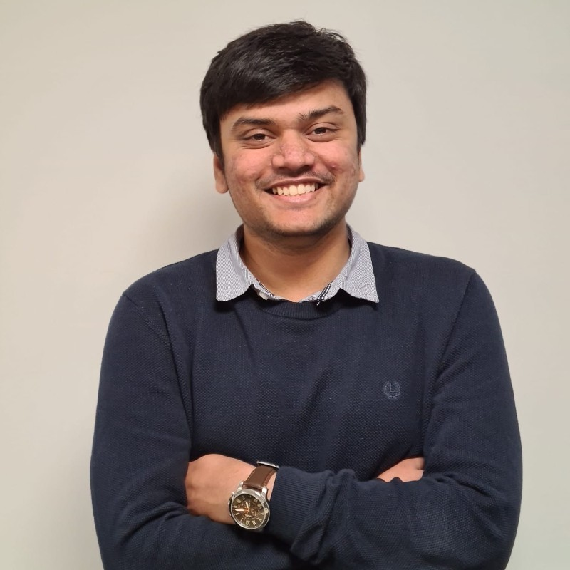
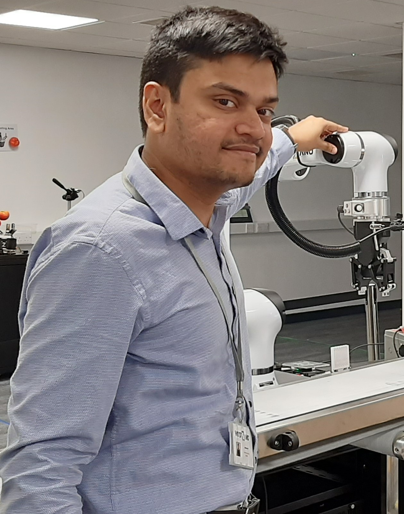
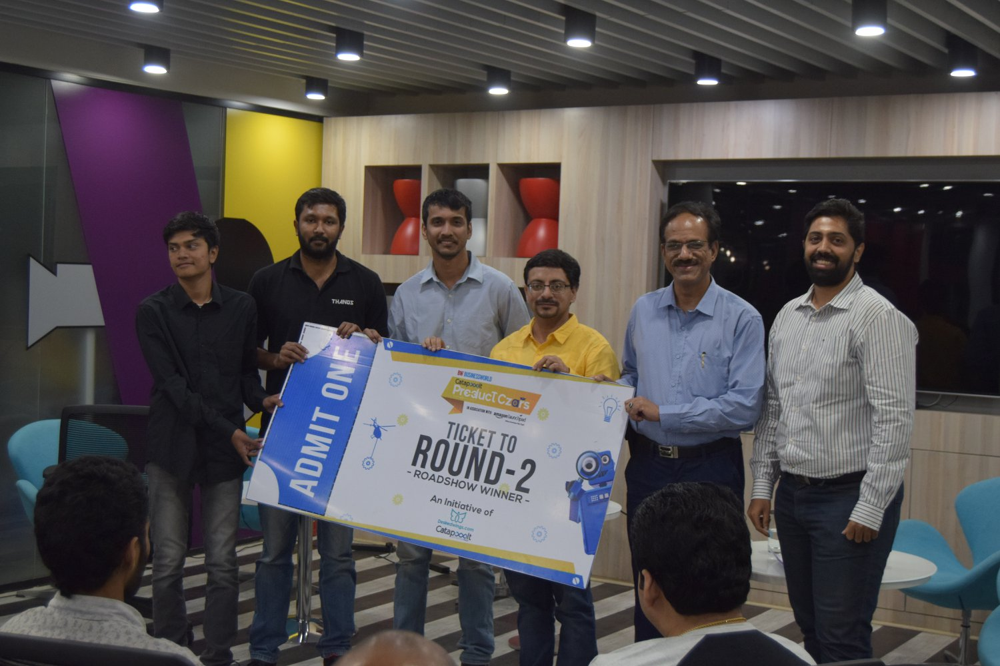
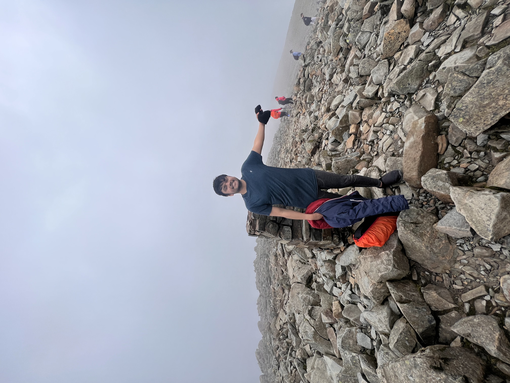

About Me
Hey there! I'm a Machine Learning Engineer based in Sedgefield, United Kingdom, currently working at Wootzano Ltd. My main focus is training classification models for quality inspection of fresh produce. I've had the opportunity to work with AWS Sagemaker Studio and EC2 instances, where I trained instance segmentation and semantic segmentation models. One of my achievements was implementing an MLOps pipeline for versioning models, data, and tracking experiments. Additionally, I calibrated LIDAR and stereoscope cameras on robots and integrated machine learning inference into the ROS environment using openVINO.
During my time at Wootzano, I achieved a 91% accuracy on a quality inspection model and trained multiple models for various business cases in fresh produce industry. I also optimized inference time for instance segmentation models and developed packages for ROS2 inferences.
Prior to my current role, I served as a Research Assistant at Kingston University in London. I was responsible for developing and improving the accuracy and reliability of an artificial intelligence algorithm for detecting hand fractures in children's x-rays. The model's proof of concept underwent validation by radiologists, and the outcome was used to plan a larger clinical study. My experience with AWS expanded during this period, and I worked with various models like VGG16, VGG19, ResNet50, and Inception v3. Additionally, I gained hands-on experience working with DICOM format files.
Previously, I worked as a Research Engineer at The Scientists Laboratory in London. There, I developed a deep learning neural network for image classification using transfer learning principles. This model was trained on a dataset of 8000 images and successfully deployed onto an edge device, specifically a Raspberry Pi.
I am the proud founder of Asimov Labs, (introduction video here) a robotics company based in Hyderabad, India. As the founder, I took on diverse responsibilities, including overseeing detailed mechanical design work, 3D modeling, calculations, simulation, and design verification testing. In addition, I played an active role in presenting product pitches to potential customers and investors. Managing a team of interns and handling various business roles, I successfully secured initial funding and established a legal entity for the startup. As a result of our achievements, Asimov Labs gained recognition as an emerging technology startup and was shortlisted for national-level crowdfunding campaigns and seed funding events. It has been an exciting journey building this company from the ground up! PS: I am the one to the extreme left :D
Outside of work, I have a passion for playing chess, Dota 2, and video games. I also enjoy hiking, walking, and reading books.In fact, I recently had the incredible experience of scaling Scafell Pike, the highest peak in England. (if you are on good reads you can check my account here ). If you're interested in discussing any of these topics or want to connect professionally, feel free to reach out!
